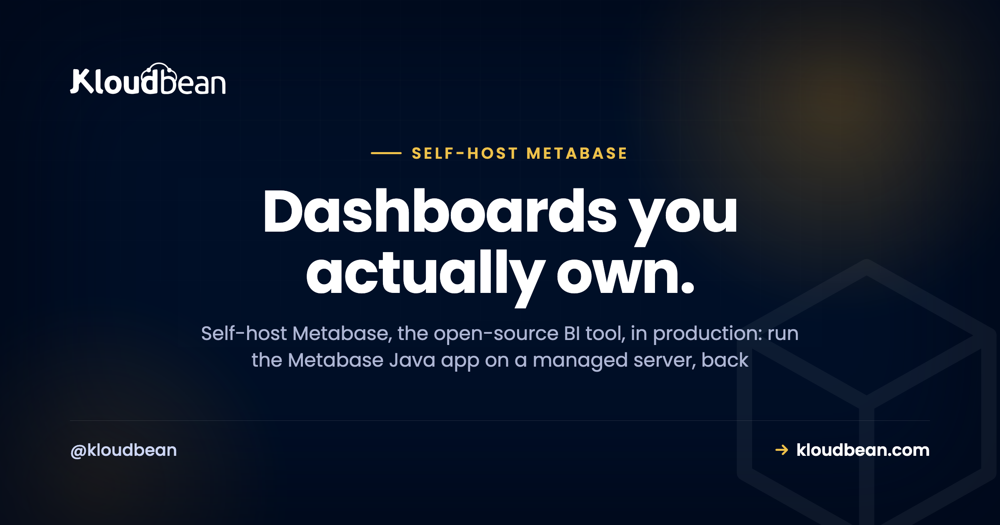
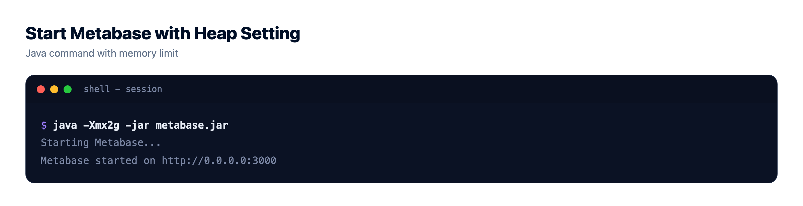
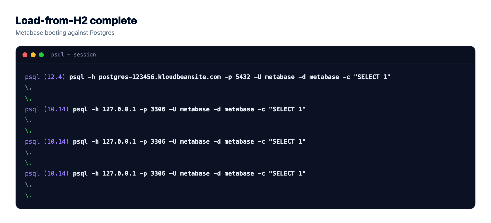

How to Self-Host Metabase in Production (Without the H2 Trap)

Metabase is one of the best open-source BI tools going: dashboards, ad-hoc questions, and charts your whole team can read, all from a single Java app you can run yourself. Self-host Metabase and you own your analytics outright. No per-seat Metabase Cloud bill, and your business data never leaves infrastructure you control. This guide is the production version of Metabase hosting: run the Metabase Java app on a managed server, give it a real application database instead of the bundled H2 file, put SSL in front, and connect it to your data internally rather than over the public internet. Most install-Metabase posts stop at the demo. The plumbing underneath is where self-hosted Metabase either runs for years or quietly loses your dashboards.
Metabase ships as a runnable Java JAR. Run it on a managed server, but don't leave its data in the default H2 file. Back it with managed PostgreSQL as its application database (set MB_DB_TYPE=postgres and the rest of the MB_DB_ vars), give the JVM a sane -Xmx heap, put SSL in front, and reach your data sources internally rather than over the public internet. On Kloudbean the OS, SSL, and backups come with the box; the dashboards and data stay yours.
One Metabase app, two very different database jobs
The single idea that makes all of this click: Metabase touches two kinds of database, and they do completely different jobs. Confuse them and nothing about self-hosting will make sense.
- Its application database. Metabase stores its own state somewhere: your dashboards, saved questions, user accounts, permissions, settings. This is Metabase's private notebook. By default it's a local H2 file, and that default is the whole problem.
- Your data sources. The databases you want to visualize: your app's Postgres, a MySQL reporting replica, whatever holds the numbers. Metabase connects and reads to build charts. It doesn't store your dashboards there.
So Metabase is a Java process in the middle, writing its own state to an application database and reading your data sources. Both sit in the same account as Metabase and talk to it internally, and the application database is the one you must not leave on H2.
Why self-host Metabase at all
Metabase Cloud is a fine product, so the reason to run it yourself isn't better software. It's the same open-source Metabase. What changes is who holds the data and who sends the invoice. A few things push teams to self-host Metabase:
- You own your analytics. Dashboards, saved questions, and the numbers behind them live on a server you control, not in a vendor's account. For a lot of teams that's the entire reason.
- You skip per-seat pricing. Hosted BI often charges by seat or usage tier, so inviting the whole company gets expensive. A server you rent doesn't care how many people log in.
- Sensitive data stays inside your infra. Metabase usually points at your production or reporting database. Self-hosting keeps the tool and the data it reads in the same account, talking internally.
- You connect directly to your databases. No allowlisting a vendor's IP ranges so an outside service can reach your Postgres. It's all internal.
The honest tradeoff: you run it and you update it. Managed hosting takes most of that off your plate (OS, SSL, backups, and patching come with the server), but the Metabase version bumps stay yours. For most teams that's a small price for keeping analytics in-house.
| Self-hosted Metabase | Metabase Cloud / hosted BI | |
|---|---|---|
| Data location & ownership | Your server, your region | The vendor's cloud account |
| Cost model | Flat server price, from a few dollars a month | Grows with seats or usage, depending on the plan |
| Customization | Full: JVM flags, env vars, network, version | Whatever the plan exposes |
| Who runs & updates it | You (managed hosting handles OS, SSL, backups) | The vendor, fully hands-off |
| Connecting to private databases | Direct, internal to your account | Needs public access, a tunnel, or an IP allowlist |
| Best for | Ownership, residency, dashboards on private data, cost at scale | Fast start, teams that never want to touch a server |
Fair's fair: hosted Metabase is lower effort, and for a small team that never wants to see a server it's a reasonable trade. Once ownership, residency, or the per-seat bill matter, self-hosting wins.
The mistake almost everyone makes: leaving Metabase on H2
This is the one that hurts. Out of the box, Metabase keeps its application database in an embedded H2 file next to the JAR. It's why demos come up in thirty seconds, and it's the wrong thing to run in production. Metabase's own docs say so.
Why the H2 default turns into a trap once real dashboards pile up:
- It can corrupt. H2 is a single file. A hard crash at the wrong moment can leave it damaged, and a damaged application database means gone dashboards, questions, and users.
- You can't back it up cleanly. Copying a live H2 file while Metabase writes to it gives you a backup that may not restore. There's no proper hot-backup story like Postgres has.
- It won't scale. The embedded file is meant for one process poking at it locally, not a busy team hammering dashboards all day.
- Migrating later is a chore. Moving H2 to Postgres after the fact works, but it's fiddly and has to happen with Metabase stopped. Far easier to start on Postgres.
My honest take: the H2 default is a demo convenience. Treat it as a trap for anything real. The moment more than one person depends on a dashboard, you want the application database on managed PostgreSQL.
Two more self-hosting mistakes ride along with the H2 one:
- Starving the JVM. Metabase is a Java app, and too little heap makes it fall over with an
OutOfMemoryErrorunder a heavy dashboard. Size the heap on purpose (real number below). - Throwaway disk and no SSL. If the server's storage is ephemeral, an H2 file can vanish on the next redeploy, the same way a SQLite file does. And a login page over plain HTTP is a credential leak waiting to happen. Persistent storage, a real application database, and SSL close all three.
Point Metabase at a real application database
The fix is a few environment variables. Metabase reads its application-database config from MB_DB_ variables at startup, so set them to your managed PostgreSQL before the first login and it stores state there instead of H2.
# Metabase application database -> managed PostgreSQL (not H2)
MB_DB_TYPE=postgres
MB_DB_DBNAME=metabase
MB_DB_HOST=10.0.0.5 # internal address of your managed Postgres
MB_DB_PORT=5432
MB_DB_USER=metabase
MB_DB_PASS=a-long-random-passwordMB_DB_HOST should be the internal address of your database, not a public one. On Kloudbean the managed PostgreSQL runs in the same account, right next to Metabase, so they talk internally and the application database is never exposed to the public internet.
Metabase itself runs as a plain JVM process. Give it a max heap and point Java at the JAR:
# Give the JVM a sane max heap, then run the JAR
java -Xmx2g -jar metabase.jarAbout that -Xmx. Metabase's docs suggest leaving 1 to 2 GB of RAM for the OS, so -Xmx1g suits a 2 GB box and -Xmx2g a 4 GB one. Too low and you hit the OutOfMemoryError; too high and you starve the OS. Start at 2g on a 4 GB server and adjust.
One more knob: Metabase listens on port 3000 by default, changed with MB_JETTY_PORT. In production you keep 3000 internal and put SSL and a proxy in front, which the deploy steps cover.
# Metabase listens on 3000 unless you tell it otherwise
MB_JETTY_PORT=3000Keep every one of these values in environment variables, not baked into a script in your repo. The full reasoning is in environment variables done right.
Deploying Metabase on a managed server, step by step
Honesty note first: Metabase isn't a one-click app on Kloudbean, and it doesn't need to be. It's a Java JAR, and Java is a supported managed runtime here. So the flow is "run the Metabase Java app on a managed server," with a managed PostgreSQL beside it. Four steps.
Step 1: Launch a managed PostgreSQL for the application database
Open the DBS section and hit Launch Database. Pick PostgreSQL, name it metabase, create it. A minute or two later it's provisioned, running right next to your app, and already being backed up. This is the database that holds every dashboard and user.

PostgreSQL is Metabase's recommended application database, and it's what I'd pick. All-in on MySQL? That's supported too; see managed PostgreSQL and managed MySQL.
Step 2: Add the application that runs the Metabase JAR
Add an application to host the Metabase Java process, with java -Xmx2g -jar metabase.jar as its start step. Running a long-lived JVM or Node process on a managed server follows the same shape as deploying an app to a managed cloud.


Step 3: Set the MB_DB env vars (and the heap)
Open Runtime Configuration then Environment Variables and paste in the MB_DB_ block from earlier, pointing at the managed PostgreSQL from step 1. This is the step that takes Metabase off H2. Save, then restart the app so it reads the new config at boot.

Step 4: Put SSL in front of the Metabase UI
Never leave a BI login page on plain HTTP. Add a domain for Metabase and turn on free SSL, so HTTPS terminates in front and port 3000 stays internal. Your team logs in over an encrypted connection, and the raw port isn't sitting open on the internet.

Migrating Metabase from H2 to Postgres
Already ran Metabase on the default H2 and have real dashboards in it? Metabase has a built-in command that reads your existing H2 application database and loads it into Postgres. This is the "Metabase H2 to Postgres" path, and two gotchas trip everyone up.
Set the MB_DB_ variables to point at the target Postgres (the block from earlier), then run the migration with Metabase stopped:
# With MB_DB_ set to the NEW Postgres, and Metabase NOT running:
java -jar metabase.jar load-from-h2 /path/to/metabase.db- Same version, both ends. The JAR you migrate with must be the exact version that last wrote the H2 file. Migrate first, upgrade after. Mixing versions is how the migration fails halfway.
- Metabase must be stopped, and mind the filename. Nothing can hold the H2 file open during the load. Point the command at the base name (
metabase.db), not the on-diskmetabase.db.mv.dbfile.
When it finishes, start Metabase with the MB_DB_ vars still pointing at Postgres. It comes up with every dashboard and user intact. If you'd rather not hand-run this on production data, Kloudbean's free migration assistance can handle it.

Connecting your data sources
With the application database sorted, point Metabase at the data you want to see. In the admin panel you add a database as a data source (Postgres, MySQL, and plenty of others), and Metabase reads from it to build charts. A few habits keep this safe:
- Keep the connection internal. Your data source and Metabase should talk internally, the same as the application database. No public exposure.
- Use a read-only user. Analytics should read, not write. A dedicated read-only database user means a bad query or a curious analyst can't change production data.
- Point at a replica if you have one. For a busy production database, aim Metabase at a read replica so heavy dashboard queries don't compete with live traffic.
Remember the two-database split: a data source is separate from the application database, so you can add or repoint sources without touching where Metabase keeps your dashboards.
Security and backups
Self-hosted Metabase is exactly as secure as you set it up to be, and the checklist is short:
- Everything database talks internally. Both the application database and your data sources stay in the same account, off the public internet, locked down with IP allow-listing so only your app server can reach them. On Kloudbean that's the default, with Shorewall and Fail2ban already on the server.
- SSL in front of the UI. Free SSL means the login and every dashboard load run over HTTPS, and port 3000 never faces the world.
- Strong admin credentials. The first Metabase admin account is a skeleton key to your dashboards and data connections. Give it a long, unique password.
- Secrets in env vars.
MB_DB_PASSand your data-source passwords belong in environment variables, not in a script that could land in Git. - Back up the application database. It holds every dashboard, question, and user. Server-level backups protect the box; regular Postgres dumps protect the data. Set both up on day one. Our server backups guide covers sane defaults.
Lose the server and you can rebuild it. Lose the application database and there's nothing to rebuild the dashboards from. That's why we moved it off H2.
Where this fits your stack
Metabase is one piece of a stack you own end to end: a Java app on your managed server, state in managed PostgreSQL, reading your other managed databases internally, behind free SSL and backups. One dashboard, one server, one bill. Weighing other tools to run yourself? The best self-hosted tools roundup is good company, and if your app leans on Supabase, self-hosting Supabase follows the same own-your-data logic.
Prototype to production, without the babysitting.
Run the app as an always-on process with managed databases, Redis, object storage, and automatic backups beside it. Deploy from Git with live build logs, and keep the infrastructure someone else's problem.
- ✓ Managed databases
- ✓ Always-on processes
- ✓ Object storage
- ✓ Automatic backups
- ✓ Free SSL
- ✓ Git deploy
- ✓ Free migration
FAQ
Can I self-host Metabase for free?
The open-source edition of Metabase is free software, so yes. What you pay for is the server it runs on and the database that stores its state. It's a Java JAR, so it runs anywhere a Java runtime is available. On Kloudbean that's a managed server from a few dollars a month, with a free trial to start.
What database does Metabase need?
Metabase needs its own application database for dashboards, saved questions, users, and settings. Use managed PostgreSQL (or MySQL) for it. That's separate from the data sources you connect Metabase to for building charts, which are your own databases that Metabase only reads.
Why not use the default H2 database?
The bundled H2 file is great for a quick local demo and wrong for production. It can corrupt on a crash, it can't be backed up cleanly while Metabase is running, and it doesn't scale to a busy team. Point Metabase at PostgreSQL before real dashboards go in.
How much memory does Metabase need?
It's a JVM app, so give it a deliberate max heap with the -Xmx flag. Metabase's docs suggest leaving 1 to 2 GB of RAM for the operating system, so -Xmx1g suits a 2 GB server and -Xmx2g a 4 GB one. Under-provision the heap and Metabase can crash with an OutOfMemoryError under load.
How do I migrate Metabase from H2 to Postgres?
Set the MB_DB variables to point at your new Postgres, stop Metabase, then run java -jar metabase.jar load-from-h2 with the path to your metabase.db file. Run it with the same Metabase version that wrote the H2 file, and upgrade only afterward. Free migration assistance can handle it if you'd rather not run it on production data.
Is self-hosted Metabase secure?
It's as secure as your setup. Put SSL in front of the UI, keep the application database and data sources off the public internet with IP allow-listing, use strong admin credentials, and store secrets in environment variables. Kloudbean adds free SSL, a Shorewall firewall, and Fail2ban on the server as a baseline.
Can Metabase connect to my existing databases?
Yes. You add each one as a data source in the admin panel, and Metabase supports PostgreSQL, MySQL, and many other engines. Keep those connections internal and use a read-only database user so dashboards can never change production data.
Do I need Docker to self-host Metabase?
No. Metabase is a Java JAR, so a Java runtime is all you strictly need. Docker is one option among several, but running the JAR directly on a managed server with a JRE works fine and is what this guide describes.